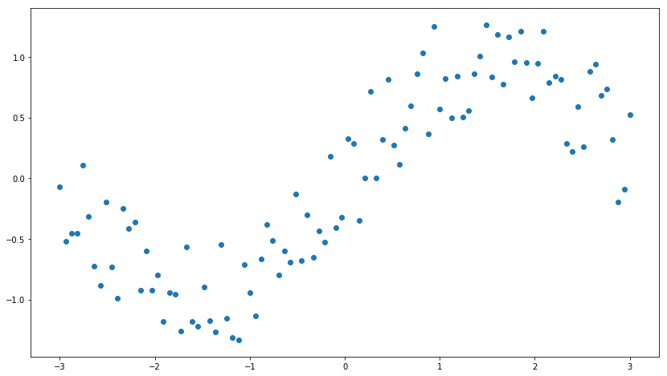
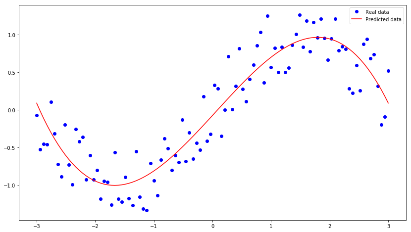

一、生成数据，生成100个点，x是从-3到3之间均匀分布的，y是x的正弦函数值加上-0.5～0.5之间的一个随机值得到的结果
1 | %matplotlib inline |
<matplotlib.collections.PathCollection at 0x7f4022ac3390>

二、定义参数输入参数的占位符
1 | X = tf.placeholder(tf.float32, name = "X") |
三、定义运算图，假定特征有x,x^2,x^3,三项，则整个函数的计算为 y=wx + W1x^2 + w2*x^3 + b
1 | w = tf.Variable(tf.random_normal([1]), name = "weight") |
四、定义损失函数和初始化optimizer,这里损失函数是计算y与预测值的方差均值
1 | x_set.shape |
(100,)
1 | loss = tf.reduce_sum(tf.pow(Y_predict - Y, 2)) / x_set.shape[0] |
五、训练迭代
1 | with tf.Session() as sess: |
Epoch 0: 0.011287849849201415
Epoch 20: 0.002904312098070534
Epoch 40: 0.0022930659861960124
Epoch 60: 0.001861640907111166
Epoch 80: 0.0015570845219596663
Epoch 100: 0.0013421906849065124
Epoch 120: 0.0011906639028636335
Epoch 140: 0.0010839080285924751
Epoch 160: 0.0010087724971023703
Epoch 180: 0.0009559617677211918
Epoch 200: 0.0009189029343284005
Epoch 220: 0.0008929493658629184
Epoch 240: 0.0008748186269485813
Epoch 260: 0.0008621914480389414
Epoch 280: 0.0008534308153672754
Epoch 300: 0.0008473811643942852
Epoch 320: 0.0008432286334247863
Epoch 340: 0.0008403999191202516
Epoch 360: 0.0008384917434211502
Epoch 380: 0.0008372206560037965
Epoch 400: 0.00083638845353045
Epoch 420: 0.0008358570021426814
Epoch 440: 0.000835529392748171
Epoch 460: 0.0008353382271738141
Epoch 480: 0.0008352376613193435
Epoch 500: 0.0008351957923265729
Epoch 520: 0.0008351906345031778
Epoch 540: 0.0008352075220511918
Epoch 560: 0.0008352370859906216
Epoch 580: 0.0008352726358773677
Epoch 600: 0.0008353100529581625
Epoch 620: 0.0008353470957054076
Epoch 640: 0.0008353820821457792
Epoch 660: 0.0008354142016842925
Epoch 680: 0.0008354429479974713
Epoch 700: 0.0008354686113952425
Epoch 720: 0.0008354910716359676
Epoch 740: 0.000835510656680416
Epoch 760: 0.0008355276462786598
Epoch 780: 0.0008355419888481741
Epoch 800: 0.000835554459651977
Epoch 820: 0.0008355653869491241
Epoch 840: 0.0008355743816347427
Epoch 860: 0.0008355819873166936
Epoch 880: 0.0008355887906360771
Epoch 900: 0.000835594305444296
Epoch 920: 0.0008355990350996834
Epoch 940: 0.0008356031159648758
Epoch 960: 0.0008356063359790334
Epoch 980: 0.0008356092827835581
1 | print("w:"+str(w[0])) |
w:0.84994864
w1:0.018252745
w2:-0.09445592
b:-0.07383199
六、结果展示
1 | plt.plot(x_set, y_set, 'bo', label='Real data') |
